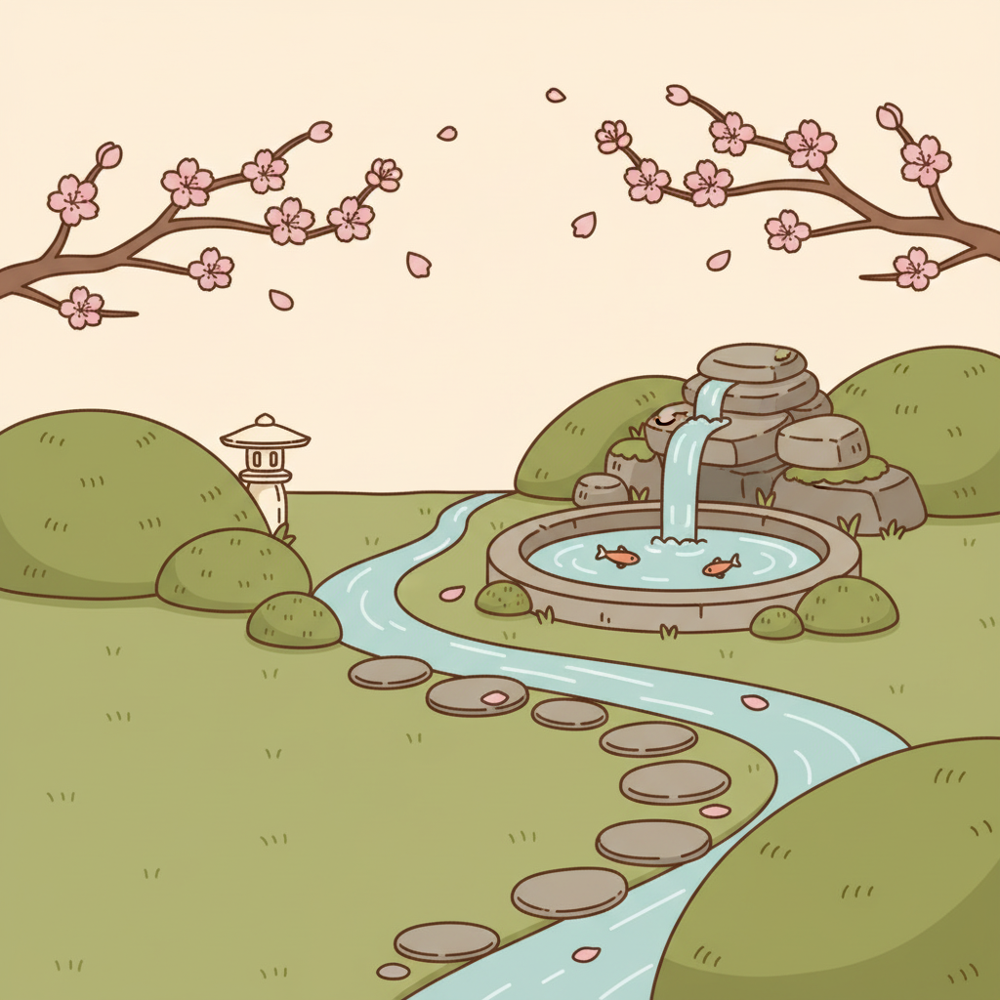

All options below are nano-banana (Gemini 2.5 Flash Image via OpenRouter, user-authorized).
The earlier SD-Turbo round is archived as calibration only — never shipped, never on a pick sheet again.
BUNNY set 1 — style options (same brief, four styles)
SCENE MASTER — style-aligned to your rabbit (rock bubbler + koi pool + meandering stream)

ACCEPT (proposed)
Master A — rest-space left
Style-matched ✓ rock formation overflows into koi pool ✓ meandering stream beside the path ✓ lantern/moss/cherry ✓. Left half lawn = rabbit's quiet spot.